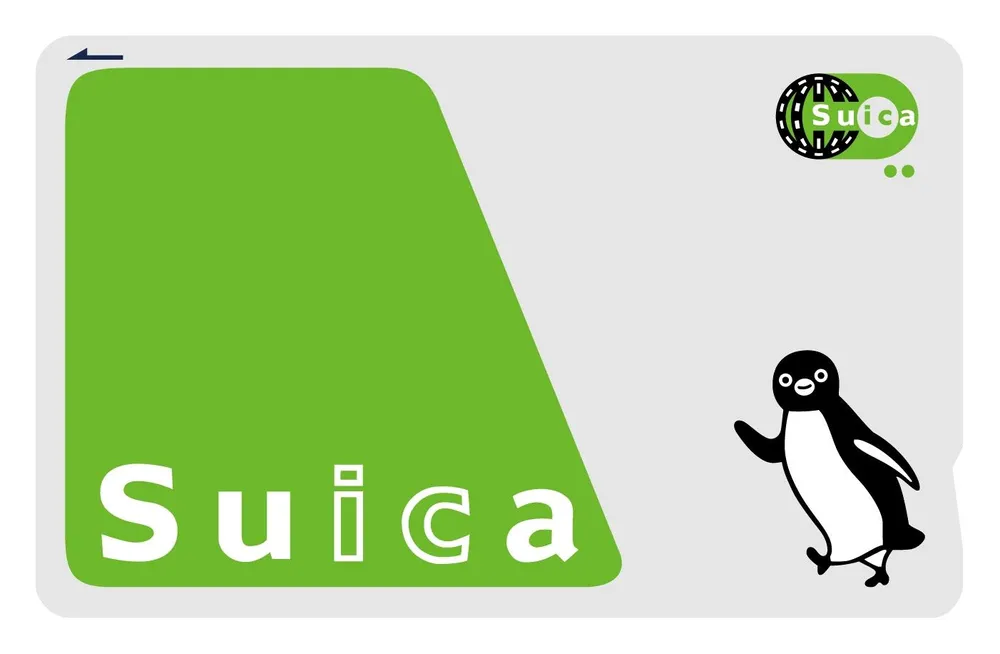
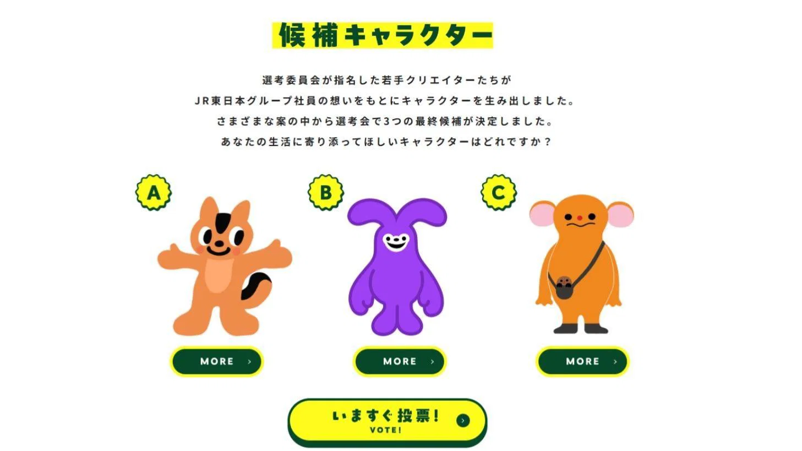
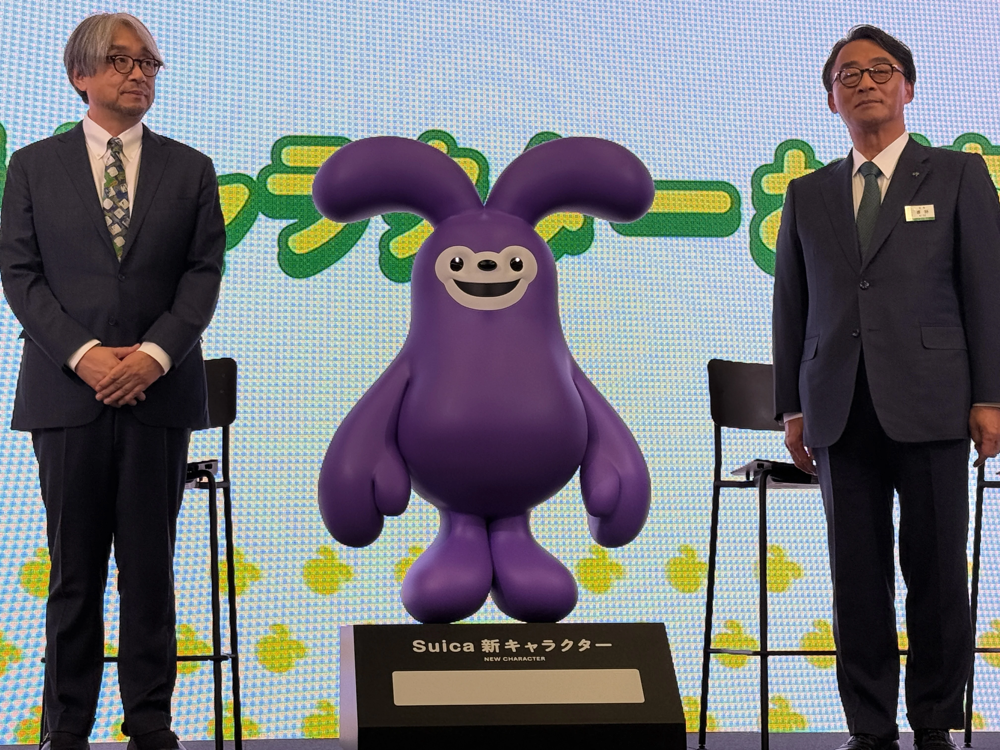
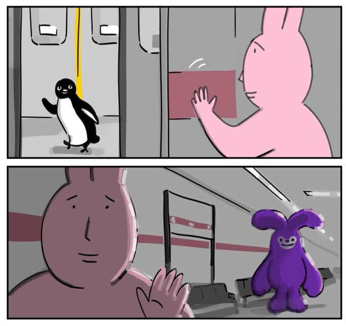
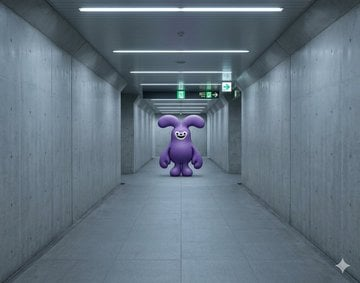
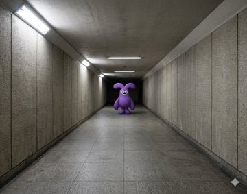
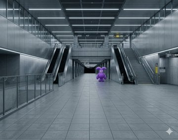
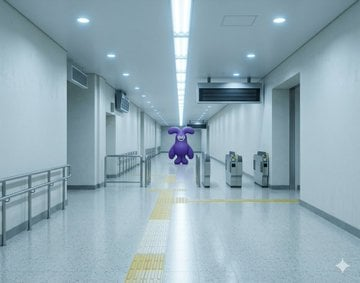

예전 마스코트 캐릭터. 저작권료 때문에 아래 세 개 중 하나를 골라야 하는 상황

B 안의 비주얼이 심상치 않은 가운데

결국 오늘 결정된 스이카의 새 마스코트





아무리 봐도 마스코트 호러게임의 등장 괴물 처럼 생겼다는 반응이다

예전 마스코트 캐릭터. 저작권료 때문에 아래 세 개 중 하나를 골라야 하는 상황

B 안의 비주얼이 심상치 않은 가운데

결국 오늘 결정된 스이카의 새 마스코트





아무리 봐도 마스코트 호러게임의 등장 괴물 처럼 생겼다는 반응이다
쟤넨 그래도 파맛첵스 꼬라지는 안났네 ㅋㅋ
그래도 저런건 투표결과주작을 했어야됨...
저대로 양갈래 쓱 반으로 갈라지면서 본모습 나올거같음
A 감안하고 시안올리고 투표열고 준비하고있엇을텐데
파맛첵스꼴 났네ㅋㅋㅋ
그래도 주작은 안쳤네 ㅋㅋㅋ
‘좆돼봐라’
디지털서커스에 나올거같네 ㅋㅋㅋ
펭귄이 진짜 귀엽긴했네
ㄹㅇ 펭귄 귀여워서 스이카 스토어에서 굿즈 좀 샀었는데 이제 단종굿즈 되어버리네
저러고 욕먹어도 좀 기다리면 이제 야짤나옴
찾아보니까 내년 3월부터 취임식/디자인변경이라카는데 다행이다
12월에 갈땐 스이카 카드 꼭 만들어야지 이상해 쟤...
차라리 구구가가같은 캐릭터가 더 낫지 않나
아무리봐도 1번으로 하고싶었던거 같은데 ㅋㅋㅋㅋㅋ
1이 제일 성의없는 디자인 같은데
근데 펭귄도 성의가 있진않아보였어
그래? 내가 보기엔 신경쓴 부분들이 보이는데
사실 잘 몰라 미안해
펭귄은 나름 인기인는 동화책의 캐릭터를 빌려와서 쓴거임. 그거때문에 저작권료 내야하고 맘대로 쓸 수 없어서 바꾸려는거지만.
c도 만만찮은데 ㅋㅋㅋ 지하철 타고 있는데 조용히 저 가방에서 신나랑 라이타 꺼낼거 같음
진심 최소 주머니칼 나올것 같음
저 미묘하게 안웃고 굳은입모양이
지하철 진상만나서 살처분 고민하는 모범시민 표정임
진짜 약간 조커변신직전표정
어허 사린가스
그래도 공정선거네 ㅋㅋㅋㅋㅋ
쉬바 개무삽네 ㅋㅋㅋㅋㅋㅋ
ㅋㅋㅋㅋㅋㅋㅋㅋㅋB선택할것같더랔ㅋㅋㅋㅋㅋㅋ
부정승차하면 쫒아오는 느낌의 호러영상 같은걸로 홍보하면 재밌겠다 ㅋㅋㅋㅋㅋ
포켓몬의 나라에서 나오는 디자인이 저딴거라니
포켓몬 같은걸 그릴수 있는 개쩌는 디자이너는
비싸니까!
디지몬 케루비몬 닮았네
파피 스이카타임ㅋㅋㅋ
걍 돈내고 원래 쓰던거 써라 ㅋㅋ
람쥐 귀여운데
ㅋㅋㅋㅋㅋ
파피플레이타임 ㅋㅋ
여- 히사시부리 펭귄 귀여운데
파피플레이타임만 생각나긴함
근데 3번 캐릭터가 좀 더 무서움
전에 투표 올라온 거 봤는데 진짜로 B가 되었네
파피 플레이타임에 팔아라